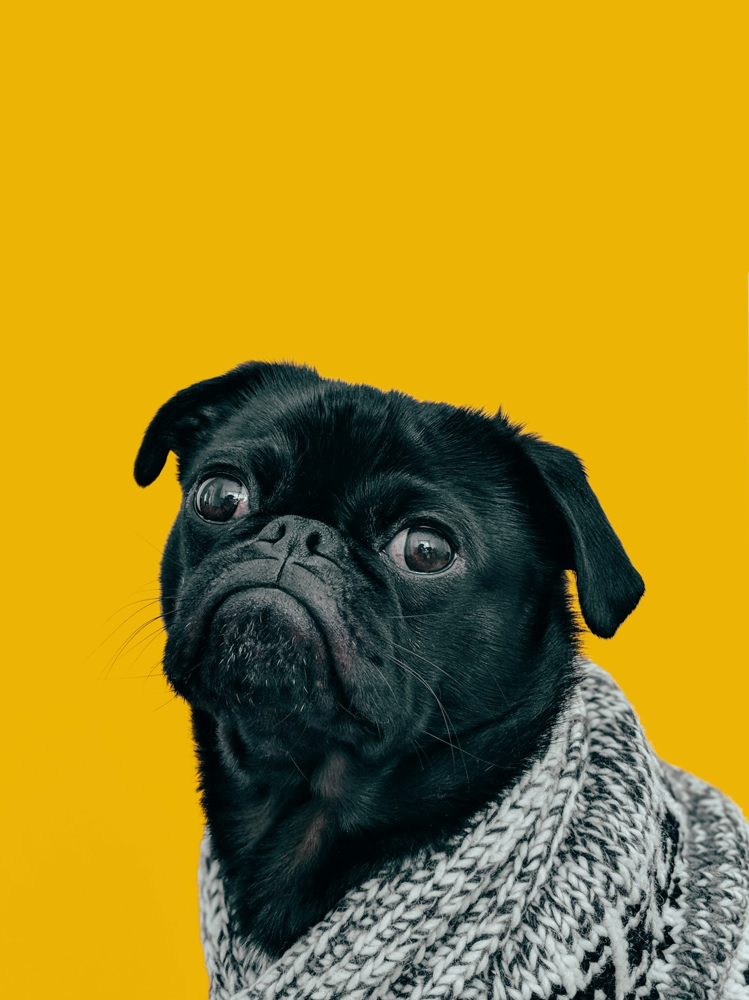
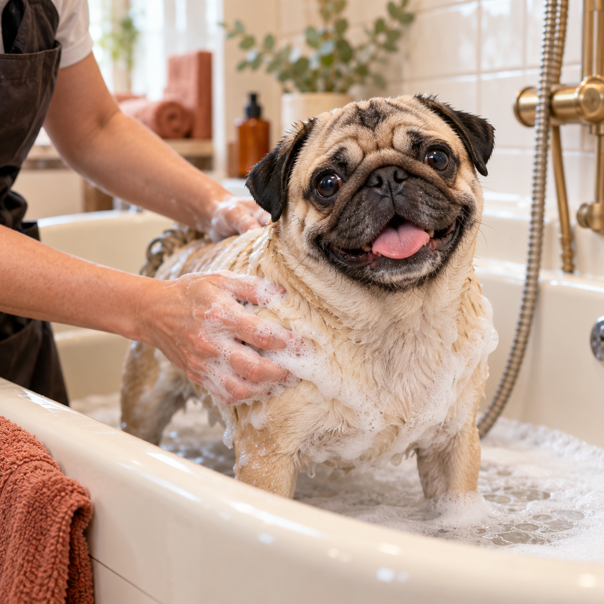
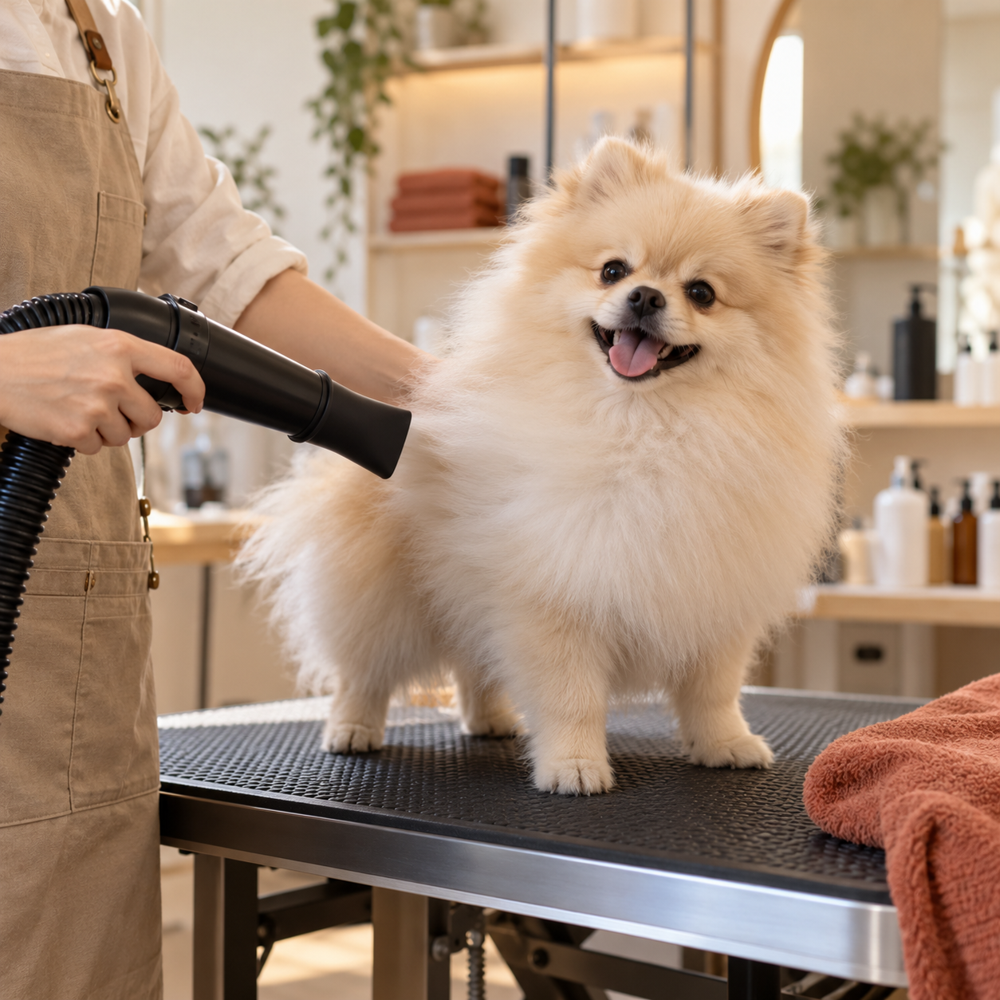
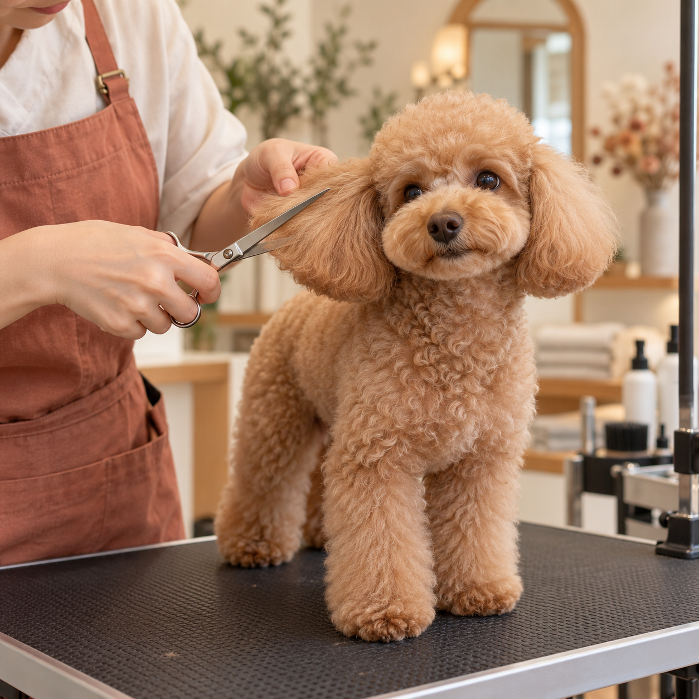

Сначала — знакомство
Обсудим привычки, особенности и ваши пожелания к образу.
И ещё один повод обнять покрепче.
Бережный груминг для тех, кто давно
стал частью вашей семьи.

За красивой шерстью — внимание к тому, кто под ней. Нам нравится груминг, после которого хочется вернуться.
Обсудим привычки, особенности и ваши пожелания к образу.
Подберём уход под шерсть и ритм жизни: от прогулок по лужам до сна на вашей подушке.
Согласуем процедуры и стоимость до начала ухода. Никаких неожиданных дополнений.
Итоговая стоимость зависит от породы, размера и состояния шерсти.

Пена, лапки
и любовь.
Расскажите, как зовут вашего друга, что он любит и чего побаивается. Маленькие подробности помогают сделать знакомство приятнее.
Красота складывается из маленьких шагов.
Вот как может выглядеть день вашего любимца.
Тёплая вода, мягкие движения и чистота до кончиков лап.

02 / СУШИМСушим и разбираем шерсть — возвращаем лёгкость и объём.

03 / НАВОДИМ КРАСОТУАккуратная форма и детали, от которых невозможно не улыбнуться.
Начните с комплексного ухода. При записи уточните породу, возраст и состояние шерсти — набор процедур стоит согласовать индивидуально.
Если в выбранный уход входит мытьё, дома мыть питомца не нужно. Лучше погулять перед визитом и взять привычный поводок.
Расскажите об этом при записи. Знакомство, паузы и подходящий формат ухода важно обсудить заранее с мастером.
«Доктор Мопс» — груминг-салон. Название не означает оказание ветеринарных услуг. По вопросам здоровья питомца обратитесь к ветеринарному врачу.
В расписании вашего любимца
не хватает одного приятного события.
Ежедневно · 10:00–20:00
Контакты для записи появятся здесь.